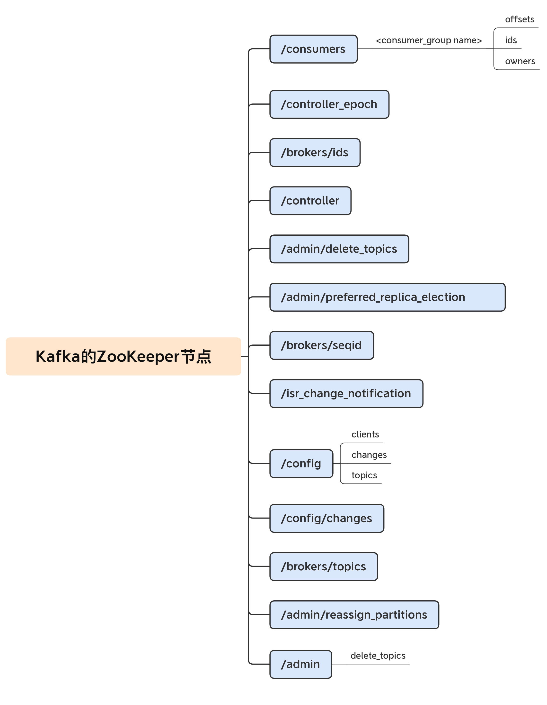
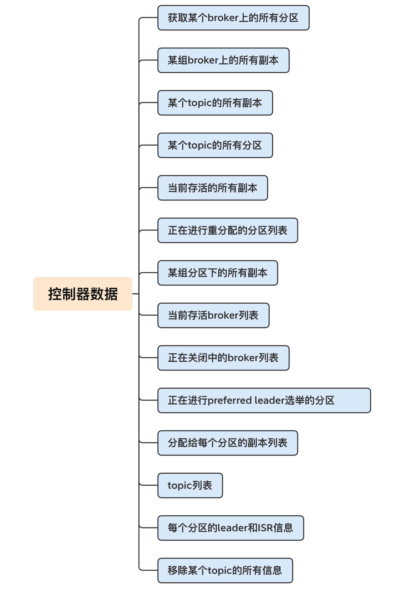
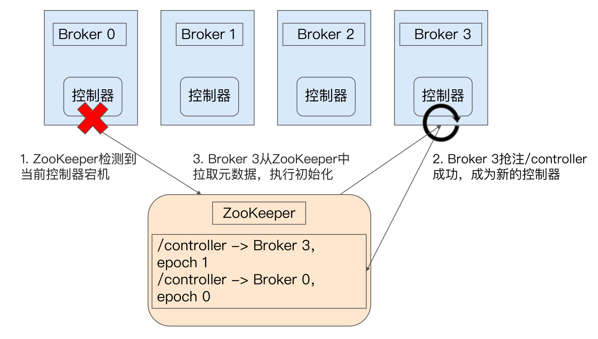
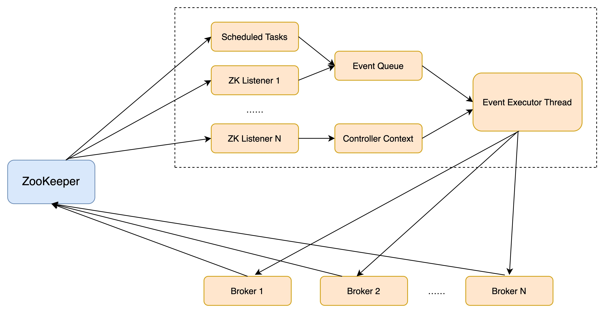
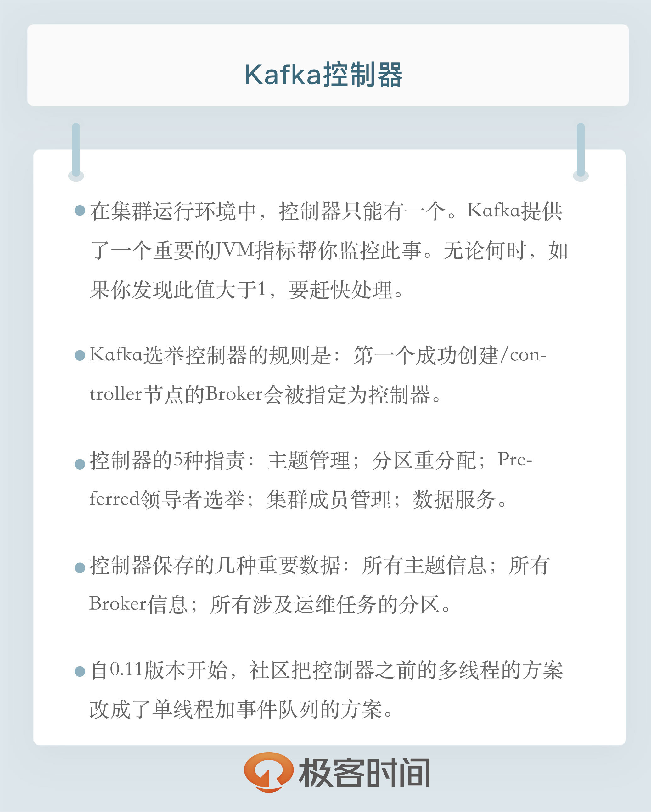

- 00 开篇词 为什么要学习Kafka？.md.html
- 01 消息引擎系统ABC.md.html
- 02 一篇文章带你快速搞定Kafka术语.md.html
- 03 Kafka只是消息引擎系统吗？.md.html
- 04 我应该选择哪种Kafka？.md.html
- 05 聊聊Kafka的版本号.md.html
- 06 Kafka线上集群部署方案怎么做？.md.html
- 07 最最最重要的集群参数配置（上）.md.html
- 08 最最最重要的集群参数配置（下）.md.html
- 09 生产者消息分区机制原理剖析.md.html
- 10 生产者压缩算法面面观.md.html
- 11 无消息丢失配置怎么实现？.md.html
- 12 客户端都有哪些不常见但是很高级的功能？.md.html
- 13 Java生产者是如何管理TCP连接的？.md.html
- 14 幂等生产者和事务生产者是一回事吗？.md.html
- 15 消费者组到底是什么？.md.html
- 16 揭开神秘的“位移主题”面纱.md.html
- 17 消费者组重平衡能避免吗？.md.html
- 18 Kafka中位移提交那些事儿.md.html
- 19 CommitFailedException异常怎么处理？.md.html
- 20 多线程开发消费者实例.md.html
- 21 Java 消费者是如何管理TCP连接的_.md.html
- 22 消费者组消费进度监控都怎么实现？.md.html
- 23 Kafka副本机制详解.md.html
- 24 请求是怎么被处理的？.md.html
- 25 消费者组重平衡全流程解析.md.html
- 26 你一定不能错过的Kafka控制器.md.html
- 27 关于高水位和Leader Epoch的讨论.md.html
- 28 主题管理知多少_.md.html
- 29 Kafka动态配置了解下？.md.html
- 30 怎么重设消费者组位移？.md.html
- 31 常见工具脚本大汇总.md.html
- 32 KafkaAdminClient：Kafka的运维利器.md.html
- 33 Kafka认证机制用哪家？.md.html
- 34 云环境下的授权该怎么做？.md.html
- 35 跨集群备份解决方案MirrorMaker.md.html
- 36 你应该怎么监控Kafka？.md.html
- 37 主流的Kafka监控框架.md.html
- 38 调优Kafka，你做到了吗？.md.html
- 39 从0搭建基于Kafka的企业级实时日志流处理平台.md.html
- 40 Kafka Streams与其他流处理平台的差异在哪里？.md.html
- 41 Kafka Streams DSL开发实例.md.html
- 42 Kafka Streams在金融领域的应用.md.html
- 加餐 搭建开发环境、阅读源码方法、经典学习资料大揭秘.md.html
- 用户故事 黄云：行百里者半九十.md.html
- 结束语 以梦为马，莫负韶华！.md.html
- 捐赠
26 你一定不能错过的Kafka控制器
你好，我是胡夕。今天我要和你分享的主题是：Kafka中的控制器组件。
控制器组件（Controller），是Apache Kafka的核心组件。它的主要作用是在Apache ZooKeeper的帮助下管理和协调整个Kafka集群。集群中任意一台Broker都能充当控制器的角色，但是，在运行过程中，只能有一个Broker成为控制器，行使其管理和协调的职责。换句话说，每个正常运转的Kafka集群，在任意时刻都有且只有一个控制器。官网上有个名为activeController的JMX指标，可以帮助我们实时监控控制器的存活状态。这个JMX指标非常关键，你在实际运维操作过程中，一定要实时查看这个指标的值。下面，我们就来详细说说控制器的原理和内部运行机制。
在开始之前，我先简单介绍一下Apache ZooKeeper框架。要知道，控制器是重度依赖ZooKeeper的，因此，我们有必要花一些时间学习下ZooKeeper是做什么的。
Apache ZooKeeper是一个提供高可靠性的分布式协调服务框架。它使用的数据模型类似于文件系统的树形结构，根目录也是以“/”开始。该结构上的每个节点被称为znode，用来保存一些元数据协调信息。
如果以znode持久性来划分，znode可分为持久性znode和临时znode。持久性znode不会因为ZooKeeper集群重启而消失，而临时znode则与创建该znode的ZooKeeper会话绑定，一旦会话结束，该节点会被自动删除。
ZooKeeper赋予客户端监控znode变更的能力，即所谓的Watch通知功能。一旦znode节点被创建、删除，子节点数量发生变化，抑或是znode所存的数据本身变更，ZooKeeper会通过节点变更监听器(ChangeHandler)的方式显式通知客户端。
依托于这些功能，ZooKeeper常被用来实现集群成员管理、分布式锁、领导者选举等功能。Kafka控制器大量使用Watch功能实现对集群的协调管理。我们一起来看一张图片，它展示的是Kafka在ZooKeeper中创建的znode分布。你不用了解每个znode的作用，但你可以大致体会下Kafka对ZooKeeper的依赖。

掌握了ZooKeeper的这些基本知识，现在我们就可以开启对Kafka控制器的讨论了。
控制器是如何被选出来的？
你一定很想知道，控制器是如何被选出来的呢？我们刚刚在前面说过，每台Broker都能充当控制器，那么，当集群启动后，Kafka怎么确认控制器位于哪台Broker呢？
实际上，Broker在启动时，会尝试去ZooKeeper中创建/controller节点。Kafka当前选举控制器的规则是：第一个成功创建/controller节点的Broker会被指定为控制器。
控制器是做什么的？
我们经常说，控制器是起协调作用的组件，那么，这里的协调作用到底是指什么呢？我想了一下，控制器的职责大致可以分为5种，我们一起来看看。
1.主题管理（创建、删除、增加分区）
这里的主题管理，就是指控制器帮助我们完成对Kafka主题的创建、删除以及分区增加的操作。换句话说，当我们执行kafka-topics脚本时，大部分的后台工作都是控制器来完成的。关于kafka-topics脚本，我会在专栏后面的内容中，详细介绍它的使用方法。
2.分区重分配
分区重分配主要是指，kafka-reassign-partitions脚本（关于这个脚本，后面我也会介绍）提供的对已有主题分区进行细粒度的分配功能。这部分功能也是控制器实现的。
3.Preferred领导者选举
Preferred领导者选举主要是Kafka为了避免部分Broker负载过重而提供的一种换Leader的方案。在专栏后面说到工具的时候，我们再详谈Preferred领导者选举，这里你只需要了解这也是控制器的职责范围就可以了。
4.集群成员管理（新增Broker、Broker主动关闭、Broker宕机）
这是控制器提供的第4类功能，包括自动检测新增Broker、Broker主动关闭及被动宕机。这种自动检测是依赖于前面提到的Watch功能和ZooKeeper临时节点组合实现的。
比如，控制器组件会利用Watch机制检查ZooKeeper的/brokers/ids节点下的子节点数量变更。目前，当有新Broker启动后，它会在/brokers下创建专属的znode节点。一旦创建完毕，ZooKeeper会通过Watch机制将消息通知推送给控制器，这样，控制器就能自动地感知到这个变化，进而开启后续的新增Broker作业。
侦测Broker存活性则是依赖于刚刚提到的另一个机制：临时节点。每个Broker启动后，会在/brokers/ids下创建一个临时znode。当Broker宕机或主动关闭后，该Broker与ZooKeeper的会话结束，这个znode会被自动删除。同理，ZooKeeper的Watch机制将这一变更推送给控制器，这样控制器就能知道有Broker关闭或宕机了，从而进行“善后”。
5.数据服务
控制器的最后一大类工作，就是向其他Broker提供数据服务。控制器上保存了最全的集群元数据信息，其他所有Broker会定期接收控制器发来的元数据更新请求，从而更新其内存中的缓存数据。
控制器保存了什么数据？
接下来，我们就详细看看，控制器中到底保存了哪些数据。我用一张图来说明一下。

怎么样，图中展示的数据量是不是很多？几乎把我们能想到的所有Kafka集群的数据都囊括进来了。这里面比较重要的数据有：
- 所有主题信息。包括具体的分区信息，比如领导者副本是谁，ISR集合中有哪些副本等。
- 所有Broker信息。包括当前都有哪些运行中的Broker，哪些正在关闭中的Broker等。
- 所有涉及运维任务的分区。包括当前正在进行Preferred领导者选举以及分区重分配的分区列表。
值得注意的是，这些数据其实在ZooKeeper中也保存了一份。每当控制器初始化时，它都会从ZooKeeper上读取对应的元数据并填充到自己的缓存中。有了这些数据，控制器就能对外提供数据服务了。这里的对外主要是指对其他Broker而言，控制器通过向这些Broker发送请求的方式将这些数据同步到其他Broker上。
控制器故障转移（Failover）
我们在前面强调过，在Kafka集群运行过程中，只能有一台Broker充当控制器的角色，那么这就存在单点失效（Single Point of Failure）的风险，Kafka是如何应对单点失效的呢？答案就是，为控制器提供故障转移功能，也就是说所谓的Failover。
故障转移指的是，当运行中的控制器突然宕机或意外终止时，Kafka能够快速地感知到，并立即启用备用控制器来代替之前失败的控制器。这个过程就被称为Failover，该过程是自动完成的，无需你手动干预。
接下来，我们一起来看一张图，它简单地展示了控制器故障转移的过程。

最开始时，Broker 0是控制器。当Broker 0宕机后，ZooKeeper通过Watch机制感知到并删除了/controller临时节点。之后，所有存活的Broker开始竞选新的控制器身份。Broker 3最终赢得了选举，成功地在ZooKeeper上重建了/controller节点。之后，Broker 3会从ZooKeeper中读取集群元数据信息，并初始化到自己的缓存中。至此，控制器的Failover完成，可以行使正常的工作职责了。
控制器内部设计原理
在Kafka 0.11版本之前，控制器的设计是相当繁琐的，代码更是有些混乱，这就导致社区中很多控制器方面的Bug都无法修复。控制器是多线程的设计，会在内部创建很多个线程。比如，控制器需要为每个Broker都创建一个对应的Socket连接，然后再创建一个专属的线程，用于向这些Broker发送特定请求。如果集群中的Broker数量很多，那么控制器端需要创建的线程就会很多。另外，控制器连接ZooKeeper的会话，也会创建单独的线程来处理Watch机制的通知回调。除了以上这些线程，控制器还会为主题删除创建额外的I/O线程。
比起多线程的设计，更糟糕的是，这些线程还会访问共享的控制器缓存数据。我们都知道，多线程访问共享可变数据是维持线程安全最大的难题。为了保护数据安全性，控制器不得不在代码中大量使用ReentrantLock同步机制，这就进一步拖慢了整个控制器的处理速度。
鉴于这些原因，社区于0.11版本重构了控制器的底层设计，最大的改进就是，把多线程的方案改成了单线程加事件队列的方案。我直接使用社区的一张图来说明。

从这张图中，我们可以看到，社区引入了一个事件处理线程，统一处理各种控制器事件，然后控制器将原来执行的操作全部建模成一个个独立的事件，发送到专属的事件队列中，供此线程消费。这就是所谓的单线程+队列的实现方式。
值得注意的是，这里的单线程不代表之前提到的所有线程都被“干掉”了，控制器只是把缓存状态变更方面的工作委托给了这个线程而已。
这个方案的最大好处在于，控制器缓存中保存的状态只被一个线程处理，因此不再需要重量级的线程同步机制来维护线程安全，Kafka不用再担心多线程并发访问的问题，非常利于社区定位和诊断控制器的各种问题。事实上，自0.11版本重构控制器代码后，社区关于控制器方面的Bug明显少多了，这也说明了这种方案是有效的。
针对控制器的第二个改进就是，将之前同步操作ZooKeeper全部改为异步操作。ZooKeeper本身的API提供了同步写和异步写两种方式。之前控制器操作ZooKeeper使用的是同步的API，性能很差，集中表现为，当有大量主题分区发生变更时，ZooKeeper容易成为系统的瓶颈。新版本Kafka修改了这部分设计，完全摒弃了之前的同步API调用，转而采用异步API写入ZooKeeper，性能有了很大的提升。根据社区的测试，改成异步之后，ZooKeeper写入提升了10倍！
除了以上这些，社区最近又发布了一个重大的改进！之前Broker对接收的所有请求都是一视同仁的，不会区别对待。这种设计对于控制器发送的请求非常不公平，因为这类请求应该有更高的优先级。
举个简单的例子，假设我们删除了某个主题，那么控制器就会给该主题所有副本所在的Broker发送一个名为StopReplica的请求。如果此时Broker上存有大量积压的Produce请求，那么这个StopReplica请求只能排队等。如果这些Produce请求就是要向该主题发送消息的话，这就显得很讽刺了：主题都要被删除了，处理这些Produce请求还有意义吗？此时最合理的处理顺序应该是，赋予StopReplica请求更高的优先级，使它能够得到抢占式的处理。
这在2.2版本之前是做不到的。不过自2.2开始，Kafka正式支持这种不同优先级请求的处理。简单来说，Kafka将控制器发送的请求与普通数据类请求分开，实现了控制器请求单独处理的逻辑。鉴于这个改进还是很新的功能，具体的效果我们就拭目以待吧。
小结
好了，有关Kafka控制器的内容，我已经讲完了。最后，我再跟你分享一个小窍门。当你觉得控制器组件出现问题时，比如主题无法删除了，或者重分区hang住了，你不用重启Kafka Broker或控制器。有一个简单快速的方式是，去ZooKeeper中手动删除/controller节点。具体命令是rmr /controller。这样做的好处是，既可以引发控制器的重选举，又可以避免重启Broker导致的消息处理中断。

开放讨论
目前，控制器依然是重度依赖于ZooKeeper的。未来如果要减少对ZooKeeper的依赖，你觉得可能的方向是什么？
欢迎写下你的思考和答案，我们一起讨论。如果你觉得有所收获，也欢迎把文章分享给你的朋友。
© 2019 - 2023 Liangliang Lee. Powered by gin and hexo-theme-book.